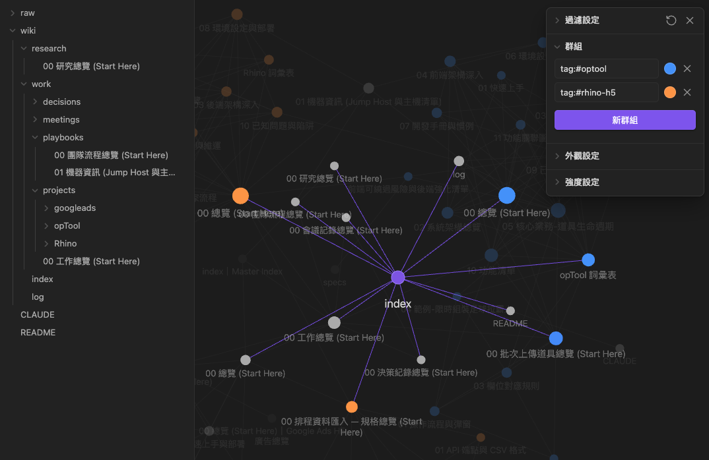
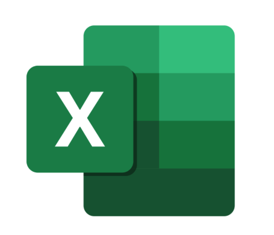
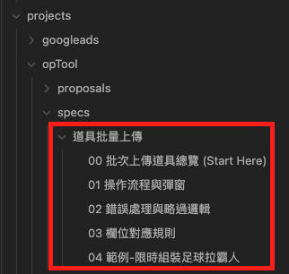
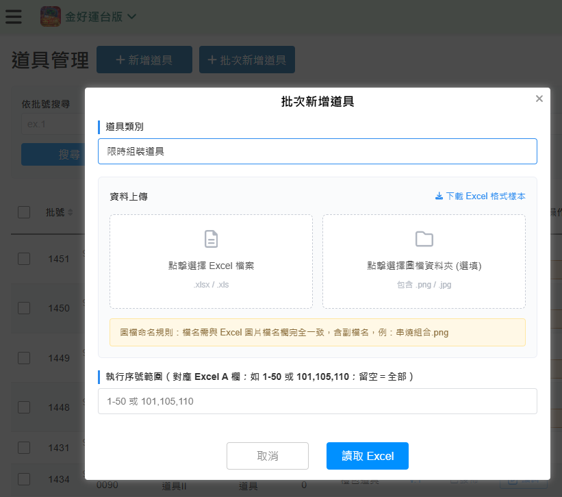
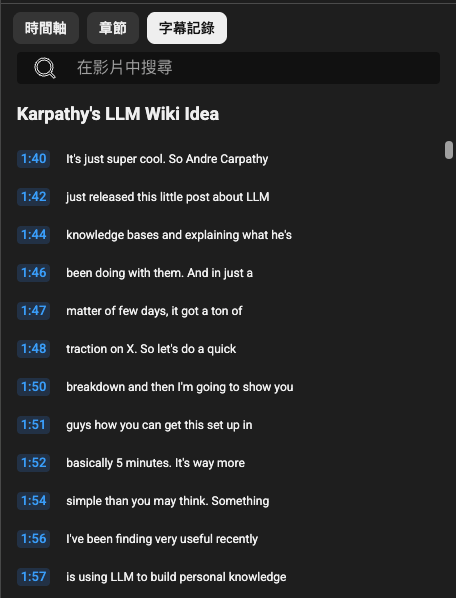
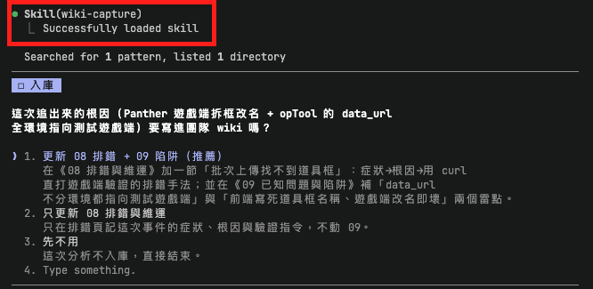

知識散落、規格難追、經驗隨人員流動流失 —— 我們把它沉澱成一個人和 AI 都能讀的 Obsidian vault:
架構不是憑空設計 —— 我把一支講 Karpathy「LLM Wiki」概念的影片字幕逐字稿貼進 Claude Code,讓它幾分鐘生成初始骨架。
綁我們自己專案的知識。
與特定專案無關的通用知識。
寫一份知識攝取的 skill wiki-capture。在專案裡分析完一段 code / 需求,它主動反問「要不要把這份知識寫進團隊 wiki?」—— 要,就按 vault 慣例入庫。 ▸ 點擊看實例
直接在專案底下提供資料 / 丟進 raw/,理論上會跑 wiki 上的 ingest skill,消化成 md 文件。
純文字 Markdown 天生適合版控 —— diff 清楚、衝突好解、歷史可追。兩套同步同時寫會打架,全隊統一走 git。
raw/(Excel、PDF)本機自用、不進 repo —— 避免二進位撐肥歷史,原始檔也較敏感。剛把東西丟進 raw/,還不確定歸哪 —— 哪個專案?規格還是現況?工作還是研究?不確定,就丟給它。
已確定是企劃規格(線上 Excel / md)。企劃 Excel → 手動匯出 PDF → raw/ → spec-ingest → status: spec 規格頁 → 登錄母專案。



與特定專案無關的通用 / 研究知識 —— 技術文章、官方文件、教學、產業報告 —— 消化進 research/。

把這整段字幕逐字稿複製起來,貼進 Claude Code 生成初始架構。

分析完一段 code 後,wiki-capture 自動載入,反問「要寫進團隊 wiki 嗎?」並給更新既有頁 / 新增 / 先不用等選項。